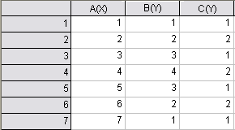

データセットを使って作図効果を向上する
PlotAttribute-DatasetControl
データセットの値で制御できるプロット属性は、色だけではありません(データセットを使ったプロットカラーのコントロールをご覧下さい。)。 その他の属性は、OriginワークブックやExcelワークブックの値を使って変更可能です。このオプションが、プロット属性に有効な場合、ワークシートのデータセットリストは、ドロップダウンリストの下にあるCol(名前)として表示されます。ここで、名前は、OriginまたはExcelのワークブックの列名になります。値の列を選択して、その属性の表示をコントロールします。
| Note: この属性のマッピングを別のグラフにコピーして貼り付けることができます。マッピング列は、ショートネーム、 ロングネーム、単位、コメント、(組込) パラメータ(n)、 ユーザ定義パラメータの列によって指定されます。詳細は、一致条件のページをご覧ください。
|
推移リストのカスタマイズ
以下に示すプロット属性のいくつかは、スタイルのカスタムリストを使用して、データポイントの表示を変更しています。スタイルの種類は、データポイントに割り当てられます。
- スタイルリストの1つから推移。
- データセットの値をスタイルリストへインデックス。
それぞれのケースで、推移リストをカスタマイズ、保存、再利用するオプションがあります。プロット属性の推移リストは、カラーリストとグループ化プロットの推移リストよりもシンプルな仕様になっています。
推移やインデックスによって、データポイントスタイルを変更すると、タブが「作図の詳細」に追加されます。ここには、利用可能なスタイルリストが含まれています。リストが使用可能な場合、保存したを編集、保存、ロードして、プロット属性の表示を制御するために使います。
- 最初の列の数字をドラッグして、リストを再設定します。
- リストを反転
- 個別リストで割り当てられているスタイルをドロップダウンリストを選択して、変更します。
- 右クリックして、メンバーを「追加」か選択したメンバーを「削除」します。
- 事前に保存してあるリストを保存してロードします。
コントロール可能なプロット属性
線種
線種を制御する列を指定するには、
- フォーマット：作図の詳細（プロット属性）を選択して、作図の詳細ダイアログボックスを開きます。
- グラフの線タブを開きます。
- 線種ドロップダウンをクリックして線種の推移として参照するワークシート列を選択します。
これにより、作図の詳細に線のスタイルリストタブが追加されます。このタブで何も設定しないとデフォルトの線種リストが使用されますが、カスタム推移リストを使用にチェックを付けると編集可能になります。詳細は、上述の推移リストのカスタマイズを参照してください。
シンボルの形状
シンボルの形状を制御する列を指定するには、
- フォーマット：作図を選択して、作図の詳細ダイアログボックスを開いて、
- シンボルタブを選びます。
- カスタムコンストラクションチェックボックスを選択します。
- 形状ドロップダウンリストから、データセットを選択します。
2つの形状リストがあり、「固定」、「カスタマイズ」から選択できます。
- デフォルト形状リスト (固定): 0 = 記号なし、1 = 正方形、2 = 丸、3 = 三角、4 = 逆三角、5 = 菱形、6 = 十字(+)、7 = エックス(×)、8 = アスタリスク(*)、9 = 横棒(-)、10 = 縦棒(|)、11 = 1234...、12 = ABCD...、13 = abcd...、14 = 右矢印(→)、15 = 左三角、16 = 右三角、17 = 六角形、18 = 星印、19 = 五角形、20 = 球形。この範囲外の数値（56と58を除く）の場合、シンボルは表示されません。 56と58の場合の特別なシンボルは、次の通りです。56＝データマーカー、58＝データポイントのX位置をマークする垂直線。
- 形状リストタブ (カスタマイズ可): カスタムコンストラクションと形状コントロールデータセットを指定して、形状リストタブを作図の詳細に追加します。カスタマイズ可能な形状リストを使うには、このタブをクリックしてカスタム推移リストを使うを選択します。これで、カスタマイズと保存が可能になります。詳細はこちらをご覧ください。
グループ化プロットのシンボル形状をカスタマイズするには、「作図の詳細グループ」タブのコントロールをご覧ください。
シンボルの内部
シンボルの内部を制御する列を指定するには、
- フォーマット：作図を選択して、作図の詳細ダイアログボックスを開いて、
- シンボルタブを選びます。
- カスタムコンストラクションチェックボックスを選択します。
- 内部ドロップダウンリストから列を選択します。
2つの内部リストがあり、「統計」、「カスタマイズ」から選択できます。
- デフォルト内部リスト (固定): 0 = 記号なし、1 = 単色、2 = 空白、3 = 中央に点、4 = 枠のみ、5 = +中央、6 = x 中央、7 = －中央、8 = |中央、9 = 上半分、10 = 右半分、11 = 下半分、12 = 左半分。 この範囲外の数値の場合、シンボルは表示されません。
- 内部リストタブ (カスタマイズ可): カスタムコンストラクションと内部コントロールデータセットを指定して、内部リストタブを作図の詳細に追加します。カスタマイズ可能な内部リストを使うには、このタブをクリックしてカスタム推移リストを使うを選択します。これで、カスタマイズと保存が可能になります。詳細はこちらをご覧ください。
グループ化プロットのシンボル内部をカスタマイズするには、「作図の詳細グループ」タブのコントロールをご覧ください。
シンボルのサイズ
シンボルサイズを制御する列を指定するには、
- フォーマット：作図を選択して、作図の詳細ダイアログボックスを開いて、
- シンボルタブを選びます。
- カスタムコンストラクションチェックボックスを選択します。
- サイズドロップダウンリストから列を選択します。
サイズコンボボックスから列を選択した場合、データセットの値が、データポイントのサイズとして取り扱われます。（単位はポイントです。） 縮尺倍率コンビネーションボックスで値を選択したり入力して、データセット値を拡大縮小できます。詳細は、（シンボル）サイズをご覧下さい。
パターン
列を指定して塗りつぶしパターンをコントロールするには（例えば、縦棒/横棒グラフ）、
- フォーマット：作図を選択して、作図の詳細ダイアログボックスを開いて、
- パターンタブを選びます。
- パターン選択画面 を開き、ポイント毎 タブに移動して、列の値を使う のドロップダウンリストから、パターンの設定に使うワークシートの列を選択します。
- パターンリスト タブが現れるので、 パターンリスト タブをクリックして、カスタム推移リストを使う を選択します。これで、カスタマイズと保存が可能になります。詳細はこちらをご覧ください。
グループ化プロットの塗り色をカスタマイズするには、「作図の詳細グループ」タブのコントロールをご覧ください。
棒の形状
棒の形状を制御する列を指定するには、
- フォーマット：作図を選択して、作図の詳細ダイアログボックスを開いて、
- パターンタブを選びます。
- パターンドロップダウンリストで、列値を使うを選択すると、次の階層のドロップダウンリストが開きます。このリストから棒形状を制御する値のワークシート列を指定します。
2つの3D棒形状があり、「固定」、「カスタマイズ」から選択できます。
- デフォルト形状リスト (固定):このデフォルトリストは、0 = 角柱/直方体、1 = 円柱などのようになります。

- 形状リストタブ (カスタマイズ可): 推移のスライダーにある文字形状やデータセットを列値を使うドロップダウンリストから選択して、形状リストタブを作図の詳細ダイアログボックスに追加します。カスタマイズ可能な形状リストを使うには、形状リストタブでクリックして、推移リストを使うを選択します。これで、カスタマイズと保存が可能になります。詳細はこちらをご覧ください。
グループ化プロットのシンボル形状をカスタマイズするには、「作図の詳細グループ」タブのコントロールをご覧ください。
ラベル
作図前に列をラベルとして設定していない場合、次の方法で列をラベルとして指定できます。
- フォーマット：作図を選択して、作図の詳細ダイアログボックスを開いて、
- ラベルタブを開き、有効にするのチェックを外します。
- ラベル形式のドロップダウンリストから列を選択します。
ラベル形式ドロップダウンリストで列を選択したとき、選択された列の値がデータポイントのラベルとしてグラフに追加されます。データポイントとラベルはワークシートの行番号で紐づいています。このラベル形式ドロップダウンリストでは、現在のワークシートにある列のみを選択できます。他のワークシートにある列を使用したい場合、ラベル形式をカスタムにしてフォーマット指定テキストボックスの項目を使用します。
詳細はこちらを参照してください：作図の詳細 -- ラベルタブ
縦棒/横棒の幅
棒の幅をコントロールするデータセットを指定します。
- フォーマット：作図の詳細（プロット属性）を選択して、作図の詳細ダイアログボックスを開きます。
- 間隔タブを選びます。
- 幅 (%)ドロップダウンリストから、データセットを選択します。
幅 (%)ドロップダウンリストから列を選択すると、値によって相対的な縦棒/横棒（同じ行のデータポイント）の幅が決まりますが、最終的なパフォーマンスは棒の間隔と重なりの影響を受け、倍率も寄与します。
詳細は、作図の詳細間隔タブコントロールをご覧ください
角度 ( XYAM ベクトルデータ)
角度を制御する列を指定するには、
- フォーマット：作図を選択して、作図の詳細ダイアログボックスを開いて、
- ベクトルタブを開きます。
- 角度ドロップダウンリスト(ベクトルデータグループ)から、プロット制御用のデータセットを選びます。
角度ドロップダウンリストから列を選択すると、関連する行のにあるそデータセットの値でベクトルの角度が決定されます。 角度単位の設定を使って角度の単位を変更できます。
詳細は、作図の詳細ベクトルタブコントロールをご覧ください
大きさ ( XYAM ベクトルデータ)
大きさを制御する列を指定するには、
- フォーマット：作図を選択して、作図の詳細ダイアログボックスを開いて、
- ベクトルタブを開きます。
- 大きさドロップダウンリスト(ベクトルデータグループ)から、プロット制御用のデータセットを選びます。
大きさドロップダウンリストから列を選択した場合、データセットの値がベクトルの大きさを決定します。単位はポイントです。
詳細は、作図の詳細ベクトルタブコントロールをご覧ください
|
Note:X端点とY端点は、XYXYベクトルグラフの作図の詳細ダイアログのベクトルタブで編集可能で、制御列を選択できます。 ただし、XYXY型ベクトルグラフの要素は、ワークシートデータセットの選択によってのみ制御できます。
|
サンプル: データセットで、シンボルの形状を設定
このサンプルでは線+シンボルグラフを作成します。 続いて、シンボルの形状を制御するデータセットを指定し、シンボルは正方形と円を交互に表示します。
- 以下のデータをワークシートに入力して、列B(Y)を選択して、2Dグラフギャラリーツールバーの線 + シンボル
 ボタンをクリックします。
ボタンをクリックします。
- 
- データプロットをダブルクリックして、作図の詳細ダイアログボックスを開きます。
- シンボルタブで、以下で詳細設定をするチェックボックスを選択します。
- 形状ドロップダウンリストを下までスクロールします。Col(C)を選択して、適用をクリックします。
これで線+シンボルグラフが、塗りつぶし正方形と塗りつぶし円の2つのシンボル形状で表示されます。 ここで行ったことは、C(Y)列の値(1または2)を使って、シンボルの形状を決めたことだけです。この値は、シンボルの形状のインデックス番号になっています。
これらの1と2の値は、シンボルの形状とどのように関連するのでしょうか。 (作図の詳細のシンボルタブにある)カスタムコンストラクションのチェックボックスのチェックを外して、（シンボルの）プレビューの隣にある下向き矢印をクリックすると、シンボルのリストの中で、最初のシンボルの形は「塗りつぶし四角形」で表示されます。
-
凡例に2種類のシンボルを表示するには
このサンプルでは、データセットの値を使用して単一の2D線+シンボルグラフのシンボルの形状を決定します。 結果的にはデータポイントによってシンボルタイプが異なるプロットになります。 凡例のプロットシンボルもデータプロットを正確に表すように調整できます。
凡例を調整するには、空のD(Y) 列を、円のシンボルの線+シンボルグラフとしてグラフレイヤに追加します。 列にデータが含まれていないため、実際にはデータプロットはグラフレイヤに表示されません。 ただし、実際には空のデータセットのプロット属性を使用することで凡例の表示をカスタマイズできます。
- ワークシートをアクティブにして、標準ツールバーの列の追加
 ボタンをクリックします。 ワークシートにD(Y)列が追加されます。
ボタンをクリックします。 ワークシートにD(Y)列が追加されます。
- グラフをアクティブにして、グラフの左上のレイヤ「１」アイコンを右クリックして、作図の詳細を選択します。これにより、作図のセットアップダイアログが開きます。
- 上部パネルで、空のD(Y)列があるブックおよびシートを選択します。
- 作図形式 = 線 + シンボル図を選択して、Xとして列Aを選択、Yに列Dを選択します。 （作図のセットアップの右パネル中央)
- 追加をクリックして空のプロットをグラフウィンドウに追加してOKをクリックします。
- グラフウィンドウをアクティブにして、フォーマット: 作図の詳細を選択します。作図の詳細ダイアログボックスが開きます。
- 作図の詳細の左側のパネルにあるツリーを開き、グラフウィンドウに追加したい[Book]Sheet!A(X), D(Y)プロットを選択します。
- シンボルタブで、プレビューボックスの隣にある下向きの三角マークをクリックします。
- 塗りつぶし円（1列目の2行）を選択します。
- OK をクリックして、ダイアログを閉じます。
- グラフの凡例を右クリックして、ショートカットメニューからプロパティを選択します。
- オブジェクトプロパティダイアログで、テキストを\L(1)\L(2) %(1)に置き換えます。
- OKをクリックします。 凡例には、塗りつぶし正方形と塗りつぶし円の両方のデータプロットアイコンを同じ線上に表示されます
ユーザガイドのグラフの凡例と、ヘルプファイルのグラフの凡例の編集をご覧ください。